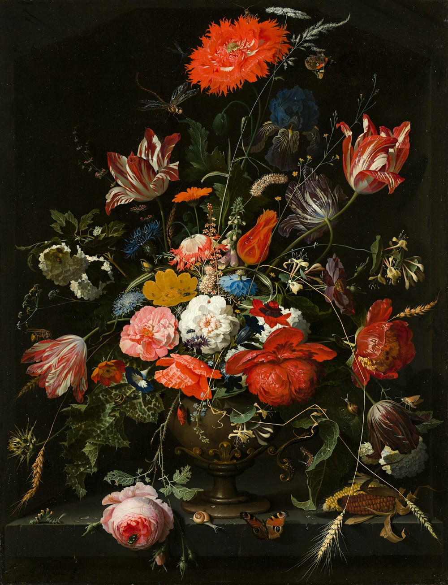

FORADACAIXA.
Interfaces que você sente.
Experiências que você lembra.
Isso é MCode.
MENOS PAPO.
MAIS PROJETO.
Uma amostra do que acontece
quando a ideia sai da caixa.
Projetos conceituais · conteúdo demonstrativo
MOVIMENTO.
Órbita
Interface & desenvolvimento
IS A
FEELING.
Frame
Direção de arte & experiência webSOME
NOISE.
Pulse
Identidade & landing pagePor dentro de Órbita
Estudo conceitual de uma marca em movimento: tipografia direta, navegação enxuta e uma esfera vetorial criada para esta composição. Exemplo demonstrativo de interface e desenvolvimento, sem vínculo com um cliente real.
Por dentro de Frame
Exploração editorial para uma galeria de arte: imagem em primeiro plano, escala tipográfica e espaço para respirar. Projeto demonstrativo com imagem de acervo via Unsplash; não é um trabalho contratado.
Por dentro de Pulse
Exercício de identidade para uma plataforma cultural: lettering de impacto, preto, branco e um ritmo gráfico que atravessa a página. Conceito fictício, disponível para substituição por um case real.
BOM DESIGN
CHAMA ATENÇÃO.
BOM CÓDIGO
SEGURA ELA.

O encontro entre
o visual e o funcional.
A MCode é o espaço onde ideias ganham forma digital. Do primeiro rascunho à última interação, design e desenvolvimento fazem parte da mesma conversa.
Design de interfaces
Sites e experiências digitais pensados como um todo — composição, navegação e cada pequeno detalhe.
Desenvolvimento web
Interfaces responsivas com atenção a desempenho, acessibilidade e à experiência em diferentes telas.
Identidade digital
Uma linguagem visual coerente para a marca se expressar no digital, da tipografia ao movimento.
TEM UMA IDEIA?
TIRA DO PAPEL.
Conte o que você está imaginando.
O primeiro passo é uma boa conversa.